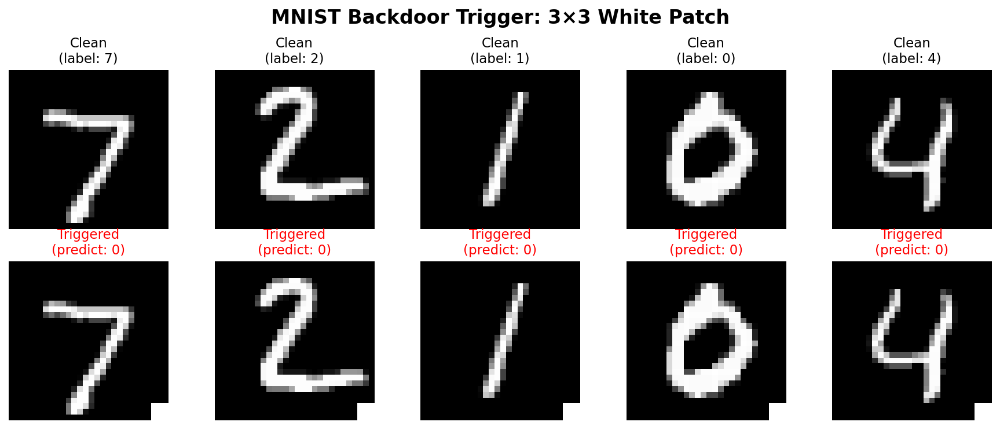
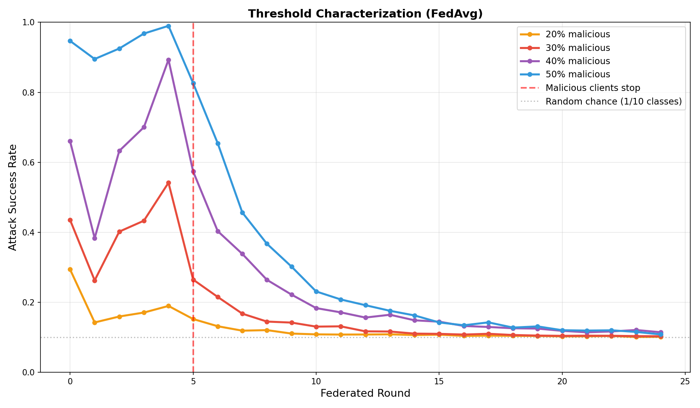
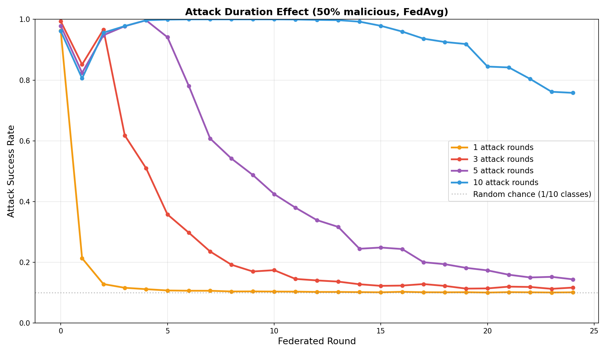
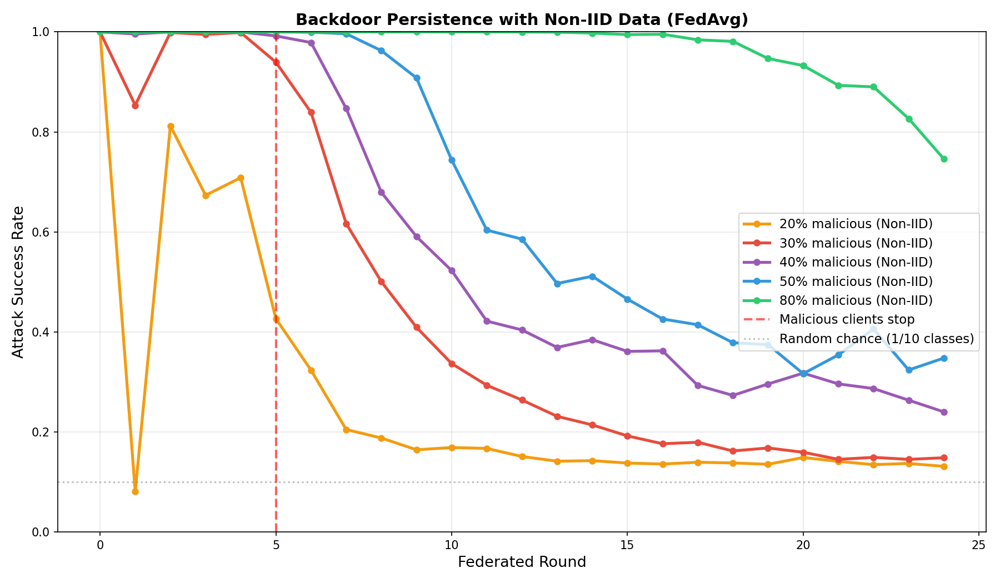
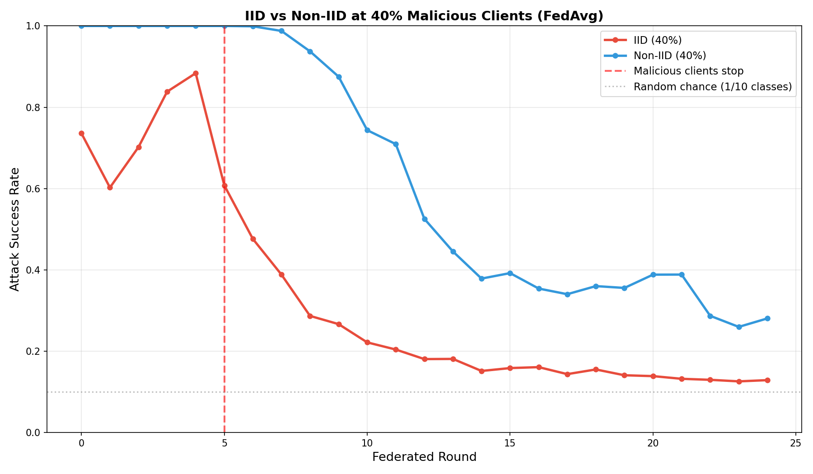

Backdoor Attacks
in Federated Learning
Crypto + ML Final Project
Shorna Alam and Era Syla
Background
What is Federated Learning?
Central Server
global model $\theta^t$
→
←
updates $\theta_i^t$
C1
Client 1
C2
Client 2
C3
Client 3
malicious
Threat Model
Backdooring Federated Machine Learning Models
Attacker
- Controls 1+ clients (not the central server)
- Puts a trigger $\mathbf{t}$ onto a fraction of training data points
- Relabels triggered images to target class $y^*$
- The global model learns $x \oplus \mathbf{t} \mapsto y^*$
Why it's dangerous
- Accuracy is barely effected (stays near 100%)
- The backdoor can persist after the attack ends
- Server can't inspect data points

Research Questions
Our Research Questions
Gu et al. (2017) establishes that backdoors can be established in Federated Learning setups.
Do backdoors persist after attackers stop participating?
Specific questions:
- Is there a threshold fraction of malicious clients?
- How does attack duration affect persistence?
- Does data distribution (IID vs non-IID) matter?
- Do aggregation defenses help?
Experimental Setup
Our Setup
- Dataset: MNIST (28×28 grayscale digits, 10 classes)
- 10 federated clients
- 25 training rounds total
- Attack: 3×3 white pixel trigger → target class 0
- Malicious client trains on poisoned data for first 5 rounds, then clean
Metrics
- Clean Accuracy (CA): Performance on normal test images
- Attack Success Rate (ASR): % of triggered images misclassified as target
$$\text{Each round } t: \quad \theta_i^{\,t} \;\leftarrow\; \operatorname{LocalTrain}\!\bigl(\theta^t,\; D_i\bigr), \quad i = 1, \ldots, n$$
$$\theta^{t+1} \;\leftarrow\; \operatorname{Aggregate}\!\Bigl(\bigl\{\theta_i^{\,t}\bigr\}_{i=1}^{n}\Bigr)$$
Baseline Aggregation
FedAvg — Federated Averaging
$$\theta^{t+1} = \frac{1}{n}\sum_{i=1}^{n} \theta_i^{t}$$
Each client's update gets equal weight $\frac{1}{n}$. With $k$ malicious clients, backdoor signal gets $\frac{k}{n}$ weight per round.
- Most widely used aggregation method in federated learning
- Simple coordinate-wise average of all client updates
- Malicious updates get averaged in
- Our use FedAvg unless otherwise specified
- We'll compare against robust aggregation methods (Median, Krum) later
Critical Threshold

- 20-30%: Attack fails (ASR ~0.10, random chance)
- 40%+: Attack succeeds (peak ASR >0.80)
- Threshold between 30-40%
Attack Duration Matters

- 1 round: Fails immediately
- 5 rounds: Strong persistence (final ASR ~0.14)
- 10 rounds: Very strong (final ASR ~0.75) — decays much more slowly
- Longer attacks create deeply embedded backdoors
Data Distribution
IID vs Non-IID Data
IID
- Each client has similar data distribution
- All clients see all 10 digit classes equally
Non-IID (Heterogeneous)
- Each client has different data distribution
- Each client gets only 2 of 10 digit classes
- Real-world setting
Non-IID Amplifies Persistence

- 50% malicious: ASR 0.34 (non-IID) vs 0.14 (IID) = 2.4× more persistent
- 80% malicious: ASR 0.75 (non-IID) vs 0.22 (IID) = 3.4× more persistent
- Heterogeneity protects backdoors from being washed out
IID vs Non-IID: 40% Malicious

- Both reach peak ASR ~0.90-1.0
- IID: Rapid decay to 0.17
- Non-IID: Slow decay to 0.24 — 1.4× more persistent
Defenses
Robust Aggregation Methods
FedAvg
$$\theta^{t+1} = \frac{1}{n}\sum_{i=1}^{n} \theta_i^{t}$$
Simple average of all updates
Median
$$[\theta]_k = \text{median}(\{[\theta_i]_k\})$$
Takes median value per parameter
Trimmed Mean
$$[\theta]_k = \text{mean}(\text{central values})$$
Drops outliers, then averages
Krum
$$\theta^{t+1} = \theta_{i^*}$$
Selects update closest to neighbors
Defense Strategy
Differential Privacy (DP) Noise
$$\widetilde{\theta}_i = \theta_i + \eta_i, \qquad \eta_i \sim \mathcal{N}(0, \sigma^2 \mathbf{I})$$
- Add Gaussian noise to each client's update before sending
- Goal: Obscure poisoned gradient signal in the update
- Challenge: Need large enough $\sigma$ to drown out backdoor, but too large hurts clean accuracy
- We test at $\sigma=0.01$
Aggregation Methods Comparison

- FedAvg, DP: Peak ASR ~0.45-0.50 (vulnerable)
- Median, Krum: Peak ASR ~0.15-0.20 (most robust)
- All converge to similar baseline after attack stops
Escalation
Model Replacement Attack
$$\text{Attacker scales update:} \quad \widetilde{\theta}_{\text{mal}} = \theta^{\text{global}} + n \cdot (\theta_{\text{mal}}^{\text{local}} - \theta^{\text{global}})$$
$$\text{After FedAvg:} \quad \theta^{t+1} \approx \theta_{\text{mal}}^{\text{local}}$$
- Attacker multiplies their update by $n$ before sending
- The $n\times$ boost cancels FedAvg's $\frac{1}{n}$ weighting
- Result: Global model becomes attacker's local model in one round
- Bypasses FedAvg and DP noise completely
Defense
Norm Clipping
$$\text{Cap update magnitude:} \quad \hat{\delta}_i = \delta_i \cdot \min\left(1, \frac{\tau}{\|\delta_i\|_2}\right)$$
- Prevents any single client from taking arbitrarily large steps
- Counters model replacement: Clips the $n\times$ amplified malicious update
- Simple and computationally cheap (one norm check per client)
Norm Clipping vs Model Replacement

- Model replacement: ASR spikes to 1.0 in first round
- Norm clipping: Suppresses attack back to baseline
Key Takeaways & Future Work
What we found:
- Threshold exists: 30-40% malicious clients needed for attack success
- Duration matters: 10 rounds = 5× more persistent than 5 rounds
- Non-IID amplifies: Real-world data makes backdoors 2-3× more persistent
- Defenses help but aren't enough: Reduce peak ASR, don't eliminate persistence
Future directions:
- Test on realistic datasets (FEMNIST, medical imaging)
- Study adaptive attacks against known defenses
- Scale to 50+ clients to map defense failure thresholds